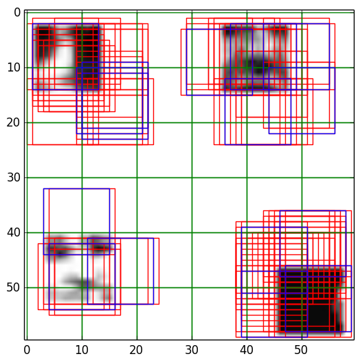
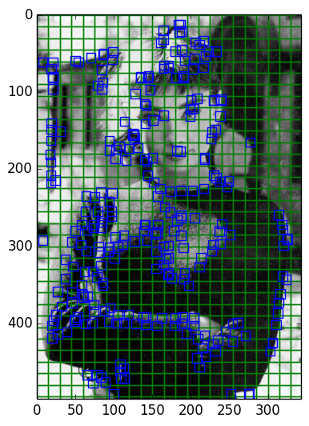
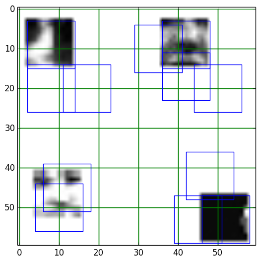

Face Detector
Results - Linear Classifier
Collages
The top half of each are the faces, and the bottom half non-faces. I included 'pseudo-faces' in my training set's non-faces so that "nearby" faces wouldn't classify as faces.
| Training Set | Untrained Set |
Image Classification
The linear classifier works PERFECTLY on the training data. I suppose this makes sense, since the weights are tuned *exactly* for those 200 images. Specifically, accuracy on faces, non-faces, and total accuracy are all 100%. The code at the end of the linear_classifier() function performs the actual testing. On unseen data, the linear classifier performs worse but still pretty good. 83% accuracy on detecting new faces, 85% on detecting new non-faces, so 84% accurate overall.
Some results
| These 4 12x12 patches were taken from the training dataset. 3 are faces, but the bottom-right one should NOT be a face. It is being incorrectly categorized | These 4 12x12 patches were NEW to the classifier. Same structure as before - the bottom right one is being incorrectly categorized as a face. |
More images below!
Nonmaximum Suppression
This table is one of my favorites. GREEN boxes represent the bounding box, RED boxes represent all the patches that didn't survive the nonmaximum suppression test (i.e., the results from classify_image), and BLUE boxes represent all the patches that did survive the test. The first image will show the RED and BLUE boxes, while the second image will only show the BLUE boxes. What's clear here is that a "good" MxM box highly depends on the content of the image. If we have a faces that are well spread out, then a larger M will work better. But if we have a crowded picture, a smaller M will segment the faces better.
|  | |
| M=10 | M=10 |
| M=15 | M=15 |
| M=30 | M=30 |
Finally, here's nonmax suppression on an image with a face far larger than what a 12x12 patch can detect. In fact, the linear classifier looks like a great edge detector! Possibly even a good corner detector.
|  | |
| M=15 | M=60 |
Gaussian Pyramids
Here we have a picture of Audrey, which is obviously far larger than anything in our training set. My gaussian pyramid implementation performs nonmax suppression - otherwise there would be too many patches. The original image is scale 0, and the smallest image is the highest scale. Larger scales (smaller images) show as larger patches because that's what they would scale to if we scaled back to the original image. The colors are randomly determined, but consistent across scales, so that you can easily make out different scales.
 |
|
| M=30, num_scales=4 | M=30, num_scales=6 |
Adding more scales, in this case, doesn't seem to have done much. However, it does seem to get better, since we see a new patch from one of the larger scales appear on Audrey's forehead, and this patch is the closest thing to fully detecting the face.
More Analysis
I've changed my linear classifier's training phase to stop after a desired accuracy has been reached. So I'm NOT doing it by raw number of iterations, which I found inefficient. Instead, I calculate how accurately "w" predicts the training data after each update, and stop when a desired accuracy is met. I found this to be reasonably effective. A problem arises if the linear classifier can find no such decision boundary to satisfy the desired accuracy threshold. Fortunately, for our relatively simple test cases I have yet to run into such a problem. In production systems, this problem is overcome by terminating once accuracy plateaus.
I plotted my linear classifier's accuracy as a function of iterations during the training phase, and with an accuracy threshold of 1.0 (that is, the classifier will keep training until it can perfectly predict the training data), we get a *very* interesting result:
Notice how the classifier goes through waves of "setback" before coming back stronger than before. This seemed odd to me, but the overrall relationship between iterations and accuracy is strongly positive. Here are some statistics relating iterations to accuracy. They validate our intuitions:
Lastly, there's a discussion to be had on the learning rate - alpha. I played around with this number a lot, but got surprising results. The learning rate didn't affect the number of iterations of the algorithm until it was 1e-14. From 1e-14 to 1e-17, the number of iterations (for the most part) actually DECREASED. You heard right! A *smaller* learning rate resulted in *fewer* iterations. Odd. However, from 1e-19 onwards, the number of iterations began increasing at an exponential rate. Turns out the culprit is the weight matrix w. I closely monitored the value of w.dot(xi) through these tests, and though w.dot(xi) affects w, it barely changes the results of our linear classifier function g(). In other words, w.dot(xi) must be disproportionality changed to have any effect on our classifier function g(). This occurs precisely from alpha=1e-14. It was an interesting effect to play around with, though I'm not sure if it's normal for the learning rate to be so vanishingly small.
| Accuracy Threshold | Number of Iterations |
|---|---|
| 0.9 | 69 |
| 0.95 | 186 |
| 0.99 | 344 |
| 1.0 | 710 |
Results - Gaussian Classifier
For all the below, unless specified otherwise, the k-value for the face gaussian is 30, and the k-value for the non-face gaussian is 23. Later on, I found better-fitting k-values (see below).Average Face & Non Face
As creepy as it looks, the left image does *look* like a face patch, and the right one looks like noise. Success!
Adding Priors
I've also extended my Gaussian classifier to include priors. Because we don't have access to enough data to establish what these priors are, I simply guessed. Then I ran some tests to see which tests worked best. Here are the results:
| P[Face] | Accuracy on Faces | Accuracy on NonFaces | Accuracy Overall |
|---|---|---|---|
| 0.1% | 55% | 99% | 77% |
| 10% | 82% | 94% | 88% |
| 50% | 90% | 91% | 90.5% |
| 75% | 93% | 88% | 90.5% |
| 100% | 100% | 0% | 50% |
The best priors, for my "unseen" dataset, is 50%. This makes sense, since my unseen dataset is half faces and half non-faces. In the real world, though, this isn't the case. After fudging with the number for a while, I found P[face] = 1% to work pretty well with new data. Here's the difference on an image that has 3 previously unseen faces and 1 previously unseen nonface:
| prior_face=0.5, M=30, k_faces=43, k_nfaces=43 | prior_face=0.1, M=30, k_faces=43, k_nfaces=43 | prior_face=0.01, M=30, k_faces=43, k_nfaces=43 |
Notice how, as the prior goes from 0.5 to 0.1, the lower-left patch becomes more accurate. Going from 0.1 to 0.01, we see an even bigger difference, the non-face patch is no longer falsely detected as a face! This is HUGE! We're saying that a face patch appears only in 1% of photos, so if we want to detect something as a face, then it needs to overcome the tremendous 99% bias against it. Yet, here we have 4 pictures and they all work perfectly!
Here we see the results on our entire untrained and trained collage. The differences here are smaller. Perhaps the crampedness of the collage changes the utility of our prior. The first row is on our untrained collage, and the second row is on our training collage.
| prior_face=0.5, M=30, k_faces=43, k_nfaces=43 | prior_face=0.1, M=30, k_faces=43, k_nfaces=43 |
| prior_face=0.01, M=30, k_faces=43, k_nfaces=43 | prior_face=0.01, M=30, k_faces=43, k_nfaces=43 |
Please note that none of the rest of my analysis used these priors. I added priors only AFTER doing the below analysis. They can be considered with prior probability 0.5.
Image Classification
With k_face = 30 and k_nface = 23: On the training data, the classifier is 61% effective overall, detecting faces 67% of the time and non-faces 55% of the time. On new, unseen data, I tested the Gaussian classifier on a variety of different k-values. I've summarized them in the table below.
| (k_face, k_nonface) | Accuracy detecting unseen faces | Accuracy detecting unseen nonfaces | Accuracy overall |
|---|---|---|---|
| (5, 8) | 100% | 6% | 53% |
| (5, 23) | 100% | 1% | 50.5% |
| (41, 41) | 89% | 89% | 89% |
| (42, 42) | 90% | 91% | 90.5% |
| (43, 43) | 90% | 91% | 90.5% |
| (44, 44) | 91% | 90% | 90.5% |
| (50, 50) | 89% | 89% | 89% |
It seems the pairs (42, 42) and (43, 43) seem to do pretty well. Interestingly, (5, 8) and (5, 23) results in having the classifier guess FACE nearly every time. What's so interesting here is how much the results vary depending on the k-values. Overall accuracy of 90.5% even beats our linear classifier!! I picked 5, 8, 23, and 30 because that's where it seemed the biggest "knees" in my graph were (see below discussion on k-values). I picked the low 40s based on wikipedia's recommendation from their article on eigenfaces, which recommends 43 to capture "95%" of the total variation in the faces. Lo and behold, 43 did turn out to be a good value! To make sure this wasn't a fluke, I tested from k values from 41 to 44, and also 50 (for good measure).
Discussion on k-values| k values for faces. The markers are at x=8 and x=30, which both seemed like "knees". | The same thing, but zoomed in by trimming the first 3 values. Marker at x=30. |
 |
|
| k values for non-faces. The marker is at x=5 | The same as before, but zoomed in by trimming the first 3 values. The marker is at k=23. |
Nonmaximum Suppression
The same patterns apply here as above. However, we can tell our Gaussian doesn't work quite as well as the linear classifier here!
|  | |
| M=10 | M=10 |
| M=15 | M=15 |
| M=30 | M=30 |
Gaussian Pyramids
See above discussion. The Gaussian detector is quite ineffective here! Larger scales for small images really throw it off. The rightmost image is a 60x60 image - quite small to begin with - and scaling it down to a 10x10 image causes the detector to incorrectly fire off a detected face at a large scale. Our scales should be appropriate to how large the input image is.
| M=30, num_scales=6 | M=50, num_scales=6 | M=30, num_scales=4 |
Conclusions
Overall, it seems the linear classifier is more "stable". However, the Gaussian seems to have more potential. And by the end, it finally seems like I was able to wrestle enough accuracy out of the Gaussian to rival the linear classifier. With more data and fine tuning, I'm confident the Gaussian classifier can be improved.